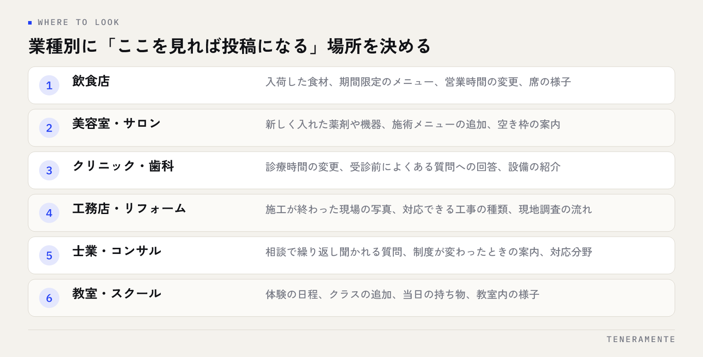

Googleビジネスプロフィールの投稿ネタが思いつかない、という相談をよくいただきます。先に結論をお伝えすると、多くの場合はネタが無いのではなく、日々の業務の中にあるネタを投稿の形に置き換える手順が決まっていないだけです。この記事では、投稿の4つの種類、業種別のネタ元の決め方、続けられる頻度への落とし方を順に整理します。
📌 この記事の結論
投稿ネタは思いつくものではなく、日常業務から自動的に出てくる形にしておくものです。投稿の種類を分け、業種ごとのネタ元を決め、無理のない頻度に落とす。この3つが決まると、毎回ゼロから考える必要がなくなります。
01投稿ネタが尽きるのは、ネタ切れではなく「探し方」の問題
「投稿するネタが無い」と感じているとき、実際に起きているのは、投稿画面を開いた時点でゼロから考え始めているという状態です。何もない場所から「お客様に役立つ話」をひねり出そうとすれば、続かないのは当然です。
一方で、その日その週にお店で起きたことは必ずあります。入荷した、施工が終わった、営業時間を変えた、よくある質問に答えた。投稿ネタは新しく作るものではなく、すでに起きたことを言い換えるものだと考えると、負担がぐっと下がります。
もう一つの原因は、投稿を「宣伝」だと捉えていることです。宣伝だと思うと、伝えるに値する大きな出来事を待つことになり、書く機会が月に一度も来ません。地図検索から来る人が知りたいのは、今日そこが開いているか、何を扱っているか、どんな雰囲気かという程度の情報です。等身大の内容で構いません。
02Googleビジネスプロフィールの投稿は4種類ある
投稿画面には種類が用意されており、それぞれ入力する項目が違います。ここを分けておくと、ネタを振り分けやすくなります。
- 最新情報：日常の出来事や案内。いちばん使う形です
- イベント：開始日と終了日を設定する形。期間のある催しに向いています
- 特典：有効期限やクーポンコードを設定できる形。キャンペーンの告知に向いています
- 商品：取扱商品を1つずつ登録していく形。一覧として残ります
最新情報とイベント・特典は流れていく性質のもの、商品は積み上がる性質のものです。流れる投稿と、残る情報を分けて考えると、何を書くべきか迷いにくくなります。基本情報や写真も含めた毎月の点検項目はGoogleビジネスプロフィール 月次運用チェックリストにまとめています。
まず商品を埋める
投稿が続かない状態でも、商品の登録は一度やれば残ります。取扱メニューやサービスを先に登録しておくと、投稿が止まった週があっても、プロフィールの情報量が薄くなりません。
03業種別に「ネタ元」を決める
ネタを毎回探さずに済ませる方法は、業種ごとに「ここを見れば投稿になる」という場所を決めてしまうことです。

捏造しない
実績や数字を投稿に書くときは、実際に起きたことだけにしてください。誇張した表現は、来店した人との印象のずれを生みます。
大切なのは、ネタ元を業務の流れの中に置くことです。「投稿のために何かする」ではなく、「いつもやっていることを、そのまま書く」形にします。施工写真を撮るのが習慣なら撮った日が投稿日、入荷の記録をつけているならその記録が下書きです。
逆に、投稿のためだけに新しい取り組みを始めると、その取り組みごと止まったときに投稿も止まります。すでに続いている業務に紐づけてください。
04頻度は「週1回を続けられるか」で決める
投稿の頻度に正解はありませんが、決め方には基準があります。担当者が繁忙期でも続けられる回数に設定することです。
週1回で決めたなら、書く曜日と時間も一緒に決めます。「水曜の朝、開店前の10分」まで決まっていると、投稿は業務になります。曜日を決めずに「週1回」とだけ決めた運用は、たいてい2か月ほどで止まります。
止まったときの戻し方
数週間空いてしまっても、遡って埋める必要はありません。次の投稿日から再開すれば十分です。空白を埋めようとして一度に何本も投稿すると、その反動でまた止まります。
新しい投稿ほど目立つ場所に出て、時間が経った投稿は奥に送られていきます。つまり、まとめて10本書いた週より、毎週1本ずつ出ている状態のほうが、見てもらえる機会は長く続きます。量より、途切れないことを優先してください。
05投稿は3つの部品で組み立てる
書く時間を短くするには、文章の型を決めておきます。次の3つだけで成立します。
- 何が起きたか（1〜2文）：入荷した、施工が終わった、時間を変えた、質問をもらった
- 読む人にとっての意味（1〜2文）：それで何が良いのか、誰に向いているのか
- 次にとってほしい行動（1文）：来店、電話、詳細を見る。ボタンを付ける場合はここに合わせる
写真は、可能なら実際に撮ったものを1枚添えます。素材集の画像より、店内や現物の写真のほうが、地図検索から来た人の判断材料になります。
3つの部品に分けておくと、書き出しで止まらなくなります。慣れてきたら1と3だけの短い投稿でも構いません。完成度を上げるより、頻度を保つほうが効きます。
06投稿でよくある失敗
相談を受ける中で繰り返し見かける形を挙げます。
- キャンペーンの告知しか投稿していない：宣伝だけが並ぶと、読む理由がなくなります。日常の情報を混ぜてください
- 期限のある情報を放置している：終わったイベントや特典が残っていると、来店した人との認識がずれます
- 他店の投稿をそのまま真似ている：業種が同じでも、扱う商品と客層が違えば刺さる内容も変わります
- 担当者が1人で、引き継ぎがない：その人が休むと止まります。書く場所と手順を共有しておきます
- 投稿だけをやっている：投稿は運用の一部です。基本情報や口コミへの対応と合わせて初めて効いてきます
自社で一通り回す場合の全体像はMEO対策を自分でやる方法に手順としてまとめてあります。
投稿が続いている店は、ネタが豊富なのではなく、書く日が決まっているだけです。
07よくある質問
投稿は毎日したほうがいいですか？
投稿の文章はどれくらいの長さが適切ですか？
投稿にリンクやボタンは付けたほうがいいですか？
08まとめ：ネタは探さず、貯めておく
Googleビジネスプロフィールの投稿ネタが尽きるのは、書く直前に考え始めているからです。投稿の種類を分け、業種ごとのネタ元を業務の流れの中に決め、続けられる頻度と曜日を固定する。この3つが決まれば、毎回考える工程そのものが無くなります。
今日から着手できるのは、商品の登録と、ネタ元を1つ決めることです。どちらも費用はかかりません。そのうえで、来週の同じ曜日に1本目を投稿してみてください。
TENERAMENTEでは、MEO対策を、投稿や写真の運用を自社で続けられる形まで含めてご一緒しています。何を投稿すべきか、どこまで自社でやり、どこから任せるかを一緒に整理したい段階でも構いませんので、ご相談ください。